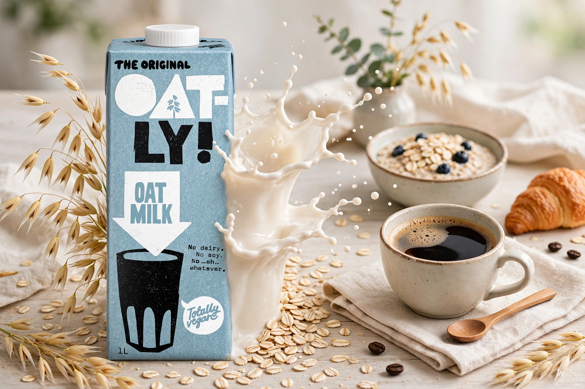

Oatly Group AB is a Swedish food company that produces alternatives to dairy products from oats, best known for its oat milk. Founded in 1994, based in Malmö, it expanded internationally in the 2010s and listed on Nasdaq in 2021.

| Oatly | |
|---|---|
| Founded | 1994 |
| Headquarters | Malmö, Sweden |
| Products | Oat milk, plant-based foods |
| Founders | Rickard Öste and Björn Öste |
The company grew from research at Lund University by Rickard Öste into oat-based drinks using enzymes to liquefy oat fibre. Under CEO Toni Petersson from 2012 it rebranded with bold marketing, entered coffee shops with a Barista Edition, and expanded to the US, UK, Germany and China.
Oatly has faced scrutiny over a Blackstone investment (2020), greenwashing complaints — a UK advertising claim was banned in 2022 — and post-IPO share price decline and factory over-expansion.